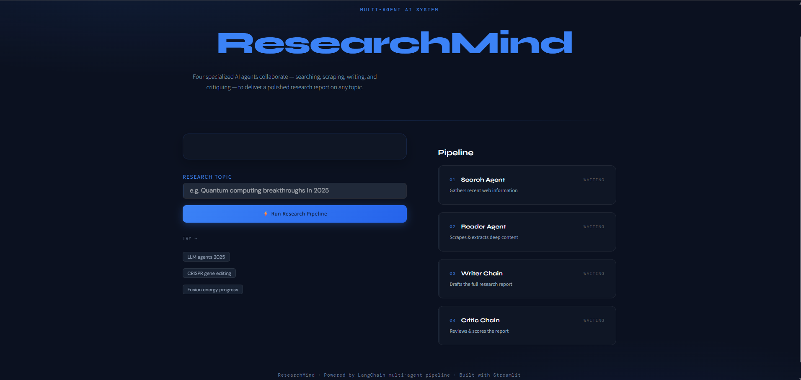

AI Research Agent
Finding reliable information across multiple sources is time-consuming and often yields incomplete or conflicting answers. This AI research agent autonomously searches, analyzes, and synthesizes information into a structured, citation-backed report. Unlike a single ChatGPT query, it performs multi-step research with source verification, giving users faster, more transparent, and more trustworthy research results.
- LangChain
- Streamlit
- ChromaDB
- Google Gemini API